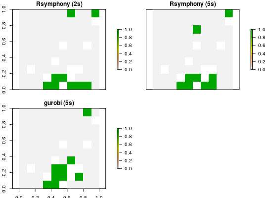

Specify the software and configurations used to solve a conservation planning
problem. Below is a list of different solvers that can be added to a
ConservationProblem-class object. By default the best available
software currently installed on the system will be used.
One of gurobi, Rsymphony, or lpsymphony packages must be installed prior to solving.
add_default_solverThis solver uses the best software currently installed on the system.
add_gurobi_solverGurobi is
a state-of-the-art commercial optimization software with an R package
interface. It is by far the fastest of the solvers available in this
package, however, it is also the only solver that is not freely
available. That said, licenses are available to academics at no cost. The
gurobi package is distributed with the Gurobi software suite.
This solver uses the gurobi package to solve problems.
add_rsymphony_solverSYMPHONY is an open-source
integer programming solver that is part of the Computational
Infrastructure for Operations Research (COIN-OR) project, an initiative
to promote development of open-source tools for operations research (a
field that includes linear programming). The Rsymphony package
provides an interface to COIN-OR and is available on CRAN. This solver
uses the Rsymphony package to solve problems.
add_lpsymphony_solverThe lpsymphony package
provides a different interface to the COIN-OR software suite. Unlike the
Rsymhpony package, the lpsymphony package is distributed
through
Bioconductor.
On Windows and Mac, lpsymphony may be easier to install.
This solver uses the lpsymphony package
to solve.
constraints, decisions,
objectives penalties,
portfolios, problem,
targets.
# load data data(sim_pu_raster, sim_features) # create basic problem p <- problem(sim_pu_raster, sim_features) %>% add_min_set_objective() %>% add_relative_targets(0.1) %>% add_binary_decisions() # create vector to store plot titles titles <- c() # create empty stack to store solutions s <- stack() # create problem with added rsymphony solver and limit the time spent # searching for the optimal solution to 2 seconds if (requireNamespace("Rsymphony", quietly = TRUE)) { titles <- c(titles, "Rsymphony (2s)") p1 <- p %>% add_rsymphony_solver(time_limit = 2) s <- addLayer(s, solve(p1)) } # create problem with added rsymphony solver and limit the time spent # searching for the optimal solution to 5 seconds if (requireNamespace("Rsymphony", quietly = TRUE)) { titles <- c(titles, "Rsymphony (5s)") p2 <- p %>% add_rsymphony_solver(time_limit = 5) s <- addLayer(s, solve(p2)) } # if the gurobi is installed: create problem with added gurobi solver if (requireNamespace("gurobi", quietly = TRUE)) { titles <- c(titles, "gurobi (5s)") p3 <- p %>% add_gurobi_solver(gap = 0.1, presolve = 2, time_limit = 5) s <- addLayer(s, solve(p3)) }#> Optimize a model with 5 rows, 90 columns and 450 nonzeros #> Variable types: 0 continuous, 90 integer (90 binary) #> Coefficient statistics: #> Matrix range [2e-01, 9e-01] #> Objective range [2e+02, 2e+02] #> Bounds range [1e+00, 1e+00] #> RHS range [3e+00, 7e+00] #> Found heuristic solution: objective 2145.2678910 #> Presolve time: 0.00s #> Presolved: 5 rows, 90 columns, 450 nonzeros #> Variable types: 0 continuous, 90 integer (90 binary) #> Presolved: 5 rows, 90 columns, 450 nonzeros #> #> #> Root relaxation: objective 1.726522e+03, 11 iterations, 0.00 seconds #> #> Nodes | Current Node | Objective Bounds | Work #> Expl Unexpl | Obj Depth IntInf | Incumbent BestBd Gap | It/Node Time #> #> 0 0 1726.52215 0 4 2145.26789 1726.52215 19.5% - 0s #> H 0 0 1792.7738341 1726.52215 3.70% - 0s #> #> Explored 1 nodes (11 simplex iterations) in 0.00 seconds #> Thread count was 1 (of 4 available processors) #> #> Solution count 2: 1792.77 2145.27 #> #> Optimal solution found (tolerance 1.00e-01) #> Best objective 1.792773834063e+03, best bound 1.726522151579e+03, gap 3.6955%# if the lpsymphony is installed: create problem with added lpsymphony solver # note that this solver is skipped on Linux systems due to instability # issues if (requireNamespace("lpsymphony", quietly = TRUE) & isTRUE(Sys.info()[["sysname"]] != "Linux")) { titles <- c(titles, "lpsymphony") p4 <- p %>% add_lpsymphony_solver(gap = 0.1, time_limit = 10) s <- addLayer(s, solve(p4)) } # plot solutions plot(s, main = titles, axes = FALSE, box = FALSE)